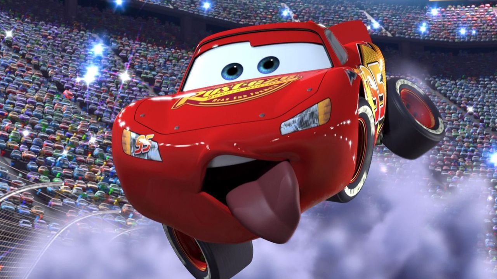

Тут-ут--ут-у-ту-, вруумврумрум
«Тачки» (англ. Cars) — американский компьютерно-анимационный спортивный комедийный фильм 2006 года, снятый студией Pixar Animation Studios для кинокомпании Walt Disney Pictures. Режиссёром фильма стал Джон Лассетер по сценарию Дэна Фогельмана, Лассетера, Джо Рэнфта, Киля Мюррея, Фила Лорина и Йоргена Клубена и сюжету Лассетера, Рэнфта и Клубена, и является последним фильмом, независимо снятым Pixar после его покупки Disney-ем в январе 2006 года. Главные роли озвучивали Оуэн Уилсон, Пол Ньюман (в его последней роли в кино), Бонни Хант, Ларри-кабельщик, Тони Шалуб, Чич Марин, Майкл Уоллис[en], Джордж Карлин, Пол Дули, Дженифер Льюис, Гуидо Куарони, Майкл Китон, Кэтрин Хелмонд, Джон Ратценбергер[en] и Ричард Петти, а гонщики Дейл Эрнхардт-младший, Марио Андретти, Михаэль Шумахер и автолюбитель Джей Лено озвучили самих себя.
Чево-чево Тачки кчау имеет следующего претендента:
ну а так вроде бы всё .-.